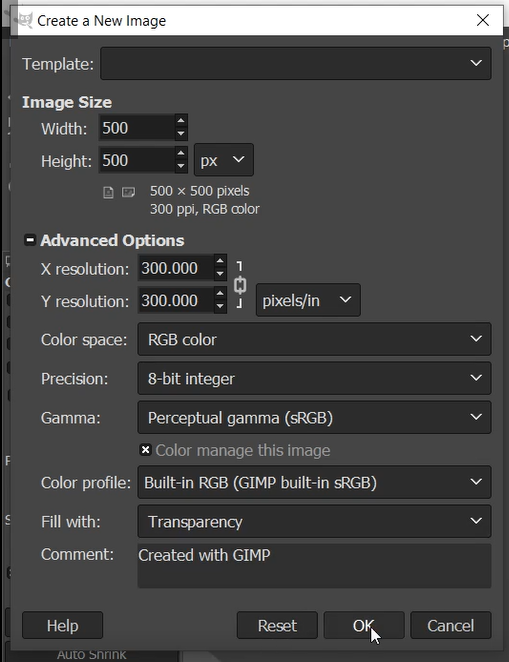
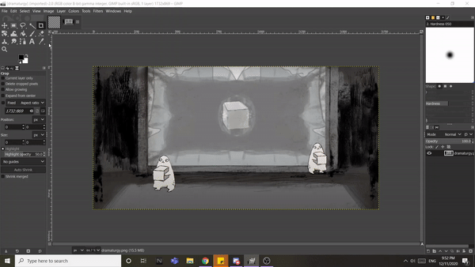
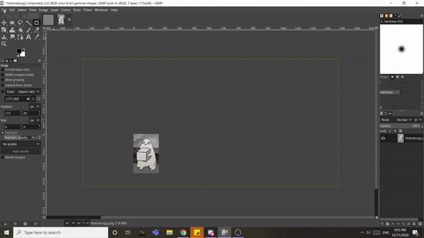
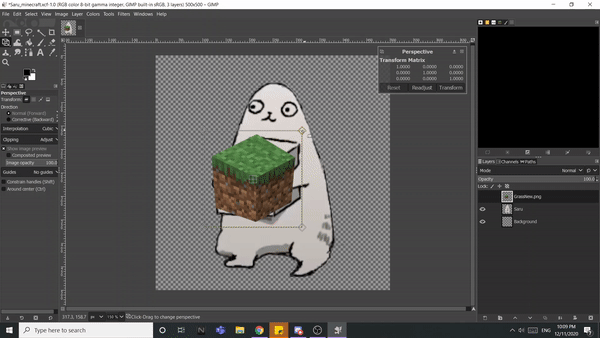
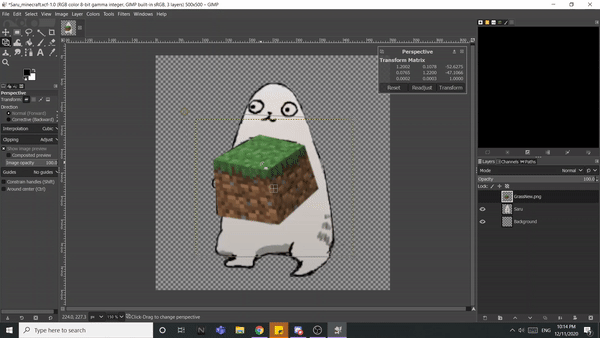
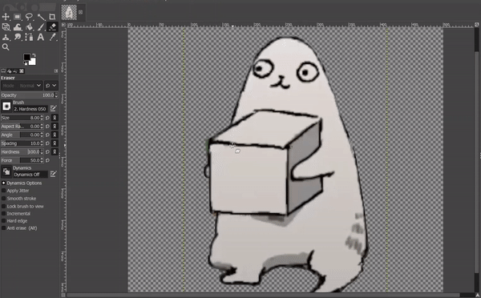

CAD: Computer Aided Design
From designing and modifying to simulating and analyzing, computers make designing more efficient and easier. We will be using these tools a lot during design and fabrication.

From designing and modifying to simulating and analyzing, computers make designing more efficient and easier. We will be using these tools a lot during design and fabrication.
There are 2 types of computer graphics:
There are many softwares that can be used to edit images, Photoshop is one of the more well known softwares. However it is a paid software so another alternative that is free is GIMP.
Download GIMP here.I used GIMP to edit this pretty scuffed emote sticker. I had experience using photoshop before but with GIMP I can now do it on my own laptop. Here Is how I used GIMP to edit this sticker.
It ain't much, but its honest work.
You can start by going File > New. Here you can create a background to start with. As I want the sticker to be square, I will size it to 500x500 px. To make the background transparent, under Advanced otpion, change Fill with to Transparency.

If I want to edit an image separately first, open the image with File > Open.
I only want a certain part of the picture, so I used the crop to to crop the part I want.

If the image is small, you can resize it.
If the image is cropped, go to Image tab and click Scale Image. Since my main image is 500px I will rescale this to 500px. Note if the image is being upscaled it will become blurry. Best is for the original image to be large then you scale the image down instead.

You can bring the image into the main project by simply dragging the image over. A new layer will be created for it. Layers allows you to work on individual parts of an image so you can modify it without changing the entire image. You can also use it to bring images to the front or back.
There are several ways to remove the background of an image.
1.Magic Wand / Fuzzy Select tool.
Magic wands selects areas of the current layer based on colour similarity. Good for removing single colour backgrounds; just select and delete!

2.Free select.
Free select allows you to trace out the part of the image you want to select. To use it to remove backgrounds. Trace out the item you want to keep, invert the selection and delete.

File > Open as Layers to add images straight into the project. I want to edit a Minecraft cube into the image so I have one with transparent background downloaded from online.
I first transformed the image to fit into the area using perspective transformation. There are a lot of tools you can use to warp and distort so I played with them until I am satisfied with the look.

To bring the image behind, simply drag the background image to the bottom. The top layer will be pushed to the front so you can also drag the main layer to the top.
Cool tip you can hide or view individual layers by clicking the eye icon at the side of the layer.

Apart from Fuzzy select and free select, you can use the Eraser tool to manually erase parts of a image. Here I am erasing the cube so the background cube will be visible.

Once satisfied you can save the image as .PNG or .JPG by clicking Export As under the File tab. Clicking save will save the file as .xcf , in which you can re-edit and modify the image with its layers.
GIMP has alot of image editing functions you can try out. Here are some links about GIMP:
Fusion 360 is an Integrated CAD, CAM, and CAE software. It unifies design, engineering, electronics, and manufacturing into a single software platform and is really useful in design and fabrication. Its also free for educational uses.
Here are several exercises I did with the software: